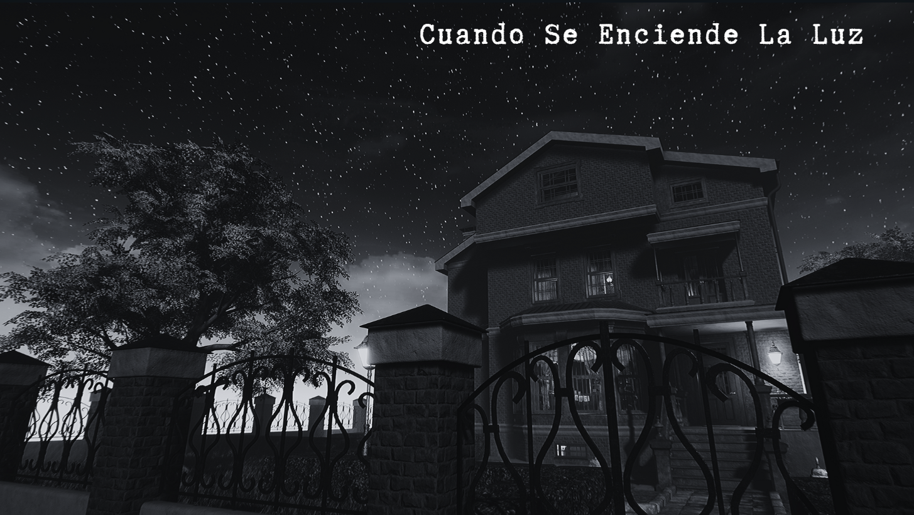
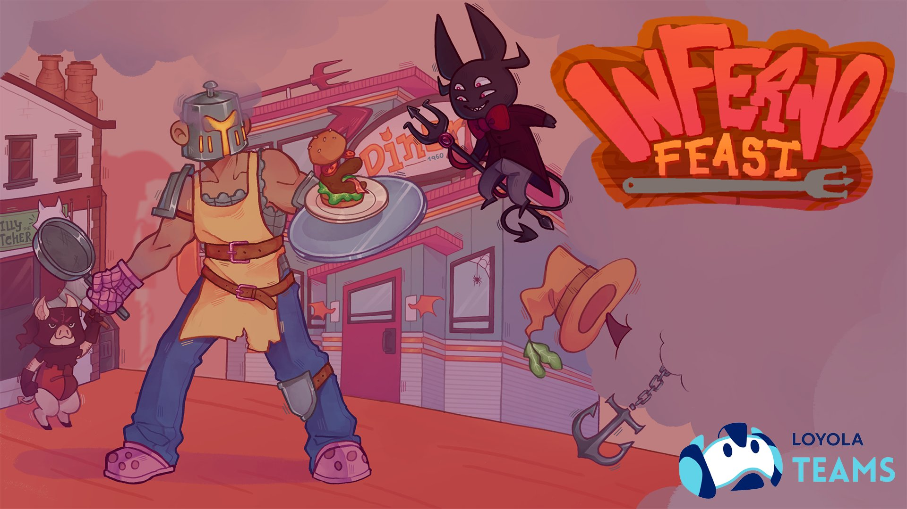

Juegos Completados

H.O.M.E.
Aventura narrativa ambientada en un mundo oscuro y emocional.

Cuando Se Enciende La Luz
Experiencia inmersiva de terror en una casa victoriana aprovechando la potencia de Unreal Engine 5.
Juegos en Desarrollo

Inferno Feast
Juego de acción y cocina en el infierno con platos y personajes únicos y entrañables.

Plague of the Inquisition
Sumérgete en la Sevilla del siglo XVI como nunca antes la habías visto.
Proyecto Lakeside
En este juego de aventura narrativo emprenderás un viaje por Estados Unidos para huir de la rutina y buscar nuevos retos.